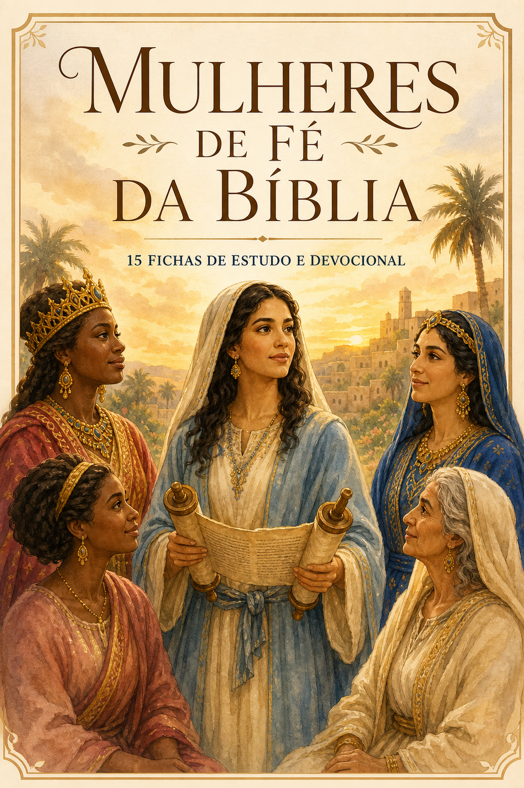
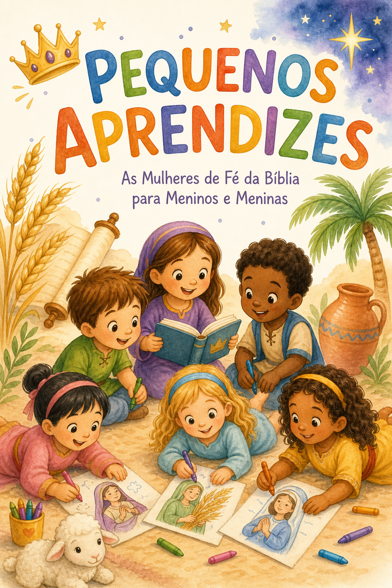

Um estudo bíblico completo em PDF, com ilustrações em aquarela, reflexões profundas e orações — para você crescer em fé mesmo com a rotina corrida.

Acesso imediato no seu e-mail para baixar e começar agora mesmo
Entre o trabalho, a casa, os filhos e a igreja, sobra pouco tempo — e a Bíblia acaba ficando para depois. Você quer ter um momento com Deus, mas não sabe por onde começar. E sente que seus filhos também precisam aprender a amar a Palavra.
A boa notícia: você não precisa de horas livres nem de um curso de teologia. Precisa de um caminho simples, bonito e fiel à Palavra — que caiba na sua rotina.
3 passos para o devocional entrar na rotina da sua casa
Histórias curtas com versículos na Almeida Revista e Corrigida. Você lê em cinco minutos, no seu ritmo.
Perguntas diretas de autoavaliação e uma oração pronta. Sem complicação para falar com Deus.
Use o bônus infantil incluso para contar a mesma história ao seu filho, enquanto ele colore as ilustrações.

O devocional infantil que acompanha o seu estudo — para meninos e meninas de 3 a 8 anos. INCLUSO
As mesmas 15 mulheres, em versão para as crianças: história curta, versículo para guardar, oração da criança, atividade lúdica do dia e dica para os pais. Tudo incluso, sem custo adicional.
Mãe e filho estudam a mesma mulher no mesmo dia: fé para você, fé para eles.
"Eu achava que precisava de uma hora livre para fazer devocional. Com as fichas, leio no meu tempo e depois conto para o meu filho antes de ele dormir."
"As ilustrações são lindas e com traços fiéis às origens bíblicas. Minha filha amou pintar a história de Ester enquanto conversávamos sobre coragem."
"Sempre tive medo de não saber transmitir a fé para meus meninos. Esse material uniu a família na mesma leitura de forma leve e bíblica."
Tudo isso por apenas
R$ 13,90
Pagamento via PIX ou cartão em 1x
Menos que o valor de um lanche — um investimento mínimo para a sua vida devocional e a dos seus filhos.
Acesso imediato • Garantia de 7 dias • Pagamento seguro
Garantia incondicional de 7 dias. Seu risco é zero: baixe o material, leia as fichas e faça as atividades com seus filhos. Se em até 7 dias sentir que não ajudou sua vida devocional, devolvemos 100% do seu dinheiro, sem burocracia.
O acesso é imediato e 100% digital. Assim que o pagamento for confirmado, você recebe um e-mail com o link para baixar todas as fichas em PDF.
Não. Você lê tudo na tela do celular, tablet ou computador. As páginas para colorir também podem ser usadas digitalmente, em qualquer app de desenho.
Sim. O material foi escrito de irmã para irmã, com linguagem simples e acolhedora, explicando o contexto de cada mulher sem termos teológicos complexos.
Utilizamos exclusivamente a Almeida Revista e Corrigida (ARC), garantindo fidelidade doutrinária e respeito à tradição das Escrituras.
O devocional infantil e as atividades foram desenhados para meninos e meninas de 3 a 8 anos.
Mulheres de Fé — uma iniciativa dedicada a apoiar mães cristãs no fortalecimento da vida devocional em seus lares, unindo estudo bíblico fiel (Almeida Revista e Corrigida) e rotina prática. Nosso compromisso é entregar ferramentas que facilitem o discipulado desde a infância, na linguagem tradicional que você confia.